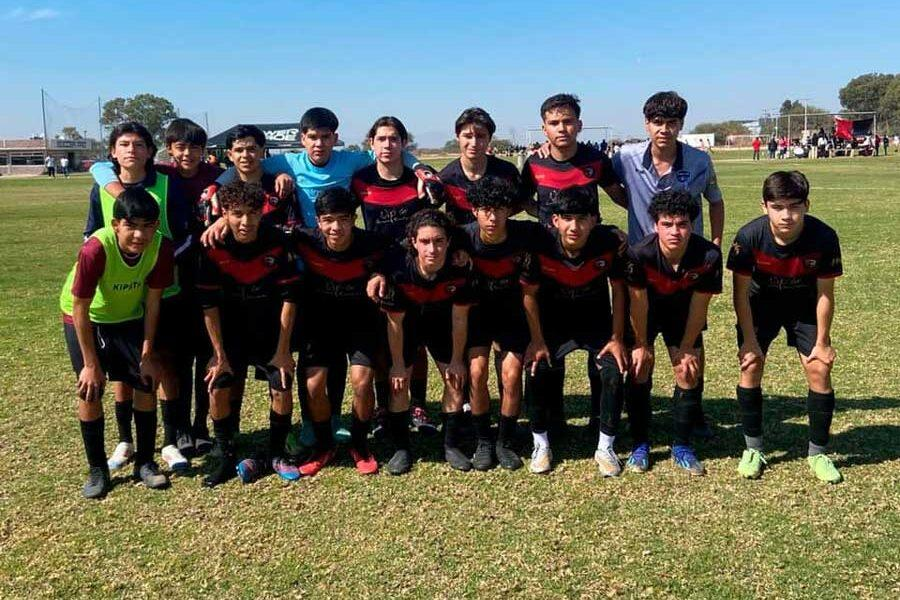

⭐ Nuestro Equipo de Maestros
👨🏫 Johan Martínez
Entrenador Principal | Sub 13 - Iniciación Deportiva | 20 años
Johan es el fundador y director técnico de Cardenales FC con pasión juvenil y visión moderna del futbol. Especializado en pedagogía del deporte y metodología lúdica que mantiene a los niños motivados mientras aprenden fundamentos sólidos. Ha trabajado como entrenador infantil en varias academias y ha formado a 150+ futbolistas que actualmente juegan en categorías competitivas y profesionales. Su energía y dedicación son contagiosas, inspirando a sus alumnos a amar el deporte.
Certificaciones: Licencia UEFA C, Diploma en Fisiología del Deporte, Especialista en Iniciación Deportiva, Curso de Psicología Deportiva Infantil
Logros: 8 Campeonatos Estatales ganados | 12 Subcampeonatos | 35+ ex-alumnos en profesional
💬 "El futbol es la mejor herramienta para formar niños con valores genuinos"
👨🏫 César Inda
Entrenador Táctico | Sub 15 - Formación Táctica | 40 años
César es especialista en táctica colectiva con 18 años de experiencia en academias profesionales. Egresado de la Escuela de Entrenadores Españoles, ha viajado a España e Italia estudiando metodologías europeas de elite. Maneja sistemas de juego complejos (4-3-3, 4-2-3-1, 3-5-2) y entrena a sus jugadores en lectura avanzada de juego. Ha preparado 6 selecciones municipales y ha visto cómo 20+ de sus alumnos avanzan a categorías estatales. Su análisis de video es referente en la región y su experiencia es invaluable para futbolistas en desarrollo táctico.
Certificaciones: Licencia UEFA B, Máster en Táctica de Futbol, Especialista en Sistemas de Juego, Analista de Video Profesional
Logros: 6 Selecciones Municipales Preparadas | 20+ Alumnos en Estatal | Campeón Regional 2023
💬 "La táctica sin técnica no existe, la técnica sin táctica es improductiva"
👨🏫 Jorge Macías
Entrenador de Alto Rendimiento | Sub 17 - Élite Profesional | 37 años
Jorge es el especialista en formación de futbolistas profesionales con 20 años en divisiones superiores. Antiguo futbolista profesional que jugó en Segunda División, entiende los retos reales de la carrera deportiva desde la experiencia vivida. Ha entrenado en 2 clubes profesionales mexicanos y fue asistente técnico en selección estatal durante 5 años. Su programa de alta intensidad prepara futbolistas listos para el profesionalismo con protocolos específicos de preparación física, análisis científico y psicología deportiva aplicada. 12 de sus alumnos juegan actualmente en profesional.
Certificaciones: Licencia UEFA A, Diplomado en Preparación Física Deportiva Avanzada, Máster en Psicología del Deporte, Especialista en Recuperación Post-Lesión
Logros: 12 Alumnos en Profesional | 5 años Asistente Estatal | 8 Campeonatos de Alto Rendimiento
💬 "El futbolista profesional no nace, se forma con disciplina, inteligencia y pasión"
🎬 Entrenamientos en Acción

Aquí puedes ver ejemplos reales de nuestros entrenamientos en acción. Cada sesión está diseñada para maximizar el desarrollo técnico, táctico y físico de nuestros futbolistas. Desde ejercicios de coordinación en categorías menores hasta entrenamientos de alta intensidad en nuestras categorías de élite, todo está orientado a formar futbolistas integrales y competitivos.